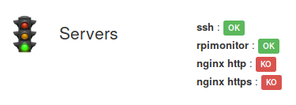

Configuration templates¶
RPi-Monitor comes with example files showing the capabilities of some features
and functions available in status page.
These files are installed into /etc/rpimonotor/templates/
To see how a specific file is behaving, you can include this file into your
configuration file using the include.
Hint
By default, files are included and commented out into data.conf.
To activate them, you can simply uncomment them and restart rpimonitord.
Note
Remember to restart RPi-Monitor to apply the configuration change:
sudo /etc/init.d/rpimonitor restart
Page header¶
This function allow to define a custom logo, custom title.
Here is and example of configuration : /etc/rpimonitor/template/example.header.conf
web.page.icon='img/avatar.png'
web.page.menutitle='XB-Monitor <sub>('+data.hostname+')</sub>'
web.page.pagetitle='XB-Monitor ('+data.hostname+')'
data.hostname is a value automatically extracted by RPi-Monitor. It is not
needed to add a configuration.
The file avatar.png has been added into /usr/share/rpimonitor/web/img/.
Here is the result:

See also
See defails in Header customisation
Friends¶
Add “friends” links RPi-Monitor running on different platform together.
A friend is simply another computer running RPi-Monitor. Configuring friends will add a drop down list on the right of the top menu with a links to RPi-Monitor sitting on the other computer.

Each friend is identified by an id and is described by 2 parameters: <name> and <link>.
Here is an example of configuration : /etc/rpimonitor/template/example.friends.conf
web.friends.1.name=Raspberry Pi
web.friends.1.link=http://192.168.0.123/
web.friends.2.name=Shuttle
web.friends.2.link=http://192.168.0.2/
web.friends.3.name=Netbook
web.friends.3.link=http://192.168.0.38/

See also
See details in Friends definition
Badges and labels¶
The functions Label and Badge are designed to write a text highligted by a color base on condition.
Here is an example of configuration : /etc/rpimonitor/template/example.badge_and_label.conf
########################################################################
# Example showing usage of labels (also applicable for badges)
# Page 1:
# Information Status Statistics
# - ssh service active - yes -no
# - rpimonitor service active - yes -no
# - http service active - yes -no
# - https service active - yes -no
########################################################################
dynamic.1.name=ssh
dynamic.1.source=netstat -nlt
dynamic.1.regexp=tcp .*:(22).*LISTEN
dynamic.2.name=rpimonitor
dynamic.2.source=netstat -nlt
dynamic.2.regexp=tcp .*:(8888).*LISTEN
dynamic.3.name=http
dynamic.3.source=netstat -nlt
dynamic.3.regexp=tcp .*:(80).*LISTEN
dynamic.4.name=https
dynamic.4.source=netstat -nlt
dynamic.4.regexp=tcp .*:(443).*LISTEN
web.status.1.content.1.name=Servers
web.status.1.content.1.icon=daemons.png
web.status.1.content.1.line.1="<b>ssh</b> : "+Label(data.ssh,"==22","OK","label-success")+Label(data.ssh,"!=22","KO","label-danger")
web.status.1.content.1.line.2="<b>rpimonitor</b> : "+Label(data.rpimonitor,"==8888","OK","label-success")+Label(data.rpimonitor,"!=8888","KO","label-danger")
web.status.1.content.1.line.3="<b>nginx http</b> : "+Label(data.http,"==80","OK","label-success")+Label(data.http,"!=80","KO","label-danger")
web.status.1.content.1.line.4="<b>nginx https</b> : "+Label(data.https,"==443","OK","label-success")+Label(data.https,"!=443","KO","label-danger")
In this example, we monitor if the service ssh is listening on port 22 and display a
label OK if yes or a label KO if not.
We do the same for RPi-Monitor on port 8888 and for nginx on port 80 and 443.
Information is extracted from the command netstat.
The regular expression will return the port number if a service is listening on this port or nothing if no service is listenning on this port.
The results are accessible into javascript from the variable data. This variable is passed to the Label function as value.
For ssh, the condition is "==22" to check if the value is equal to
22 or "!=22" to check if the value is different form 22. As only one of
the condition will be true, only one label will be displayed.
Other ports checking are using the same technic.
Here is the result:
Multiple pages¶
Status and statistics can be sorted in pages. The parameter <page id> of
web configuration is defining in which page data is displayed.
Here is an example of configuration : /etc/rpimonitor/template/example.multipage.conf
########################################################################
# Example how to use JustGageBar in status page
# Page: 1
# Information Status Statistics
# - random data - yes -yes
# Page: 2
# Information Status Statistics
# - random data - yes -yes
########################################################################
web.status.1.name=Status 1
web.statistics.1.name=Statistics 1
web.status.2.name=Status 2
web.statistics.2.name=Statistics 2
dynamic.1.name=data1
dynamic.1.source=od -vAn -N2 -tu2 < /dev/urandom
dynamic.1.regexp=(\d+)
dynamic.1.postprocess=$1%100
dynamic.1.rrd=GAUGE
dynamic.2.name=data2
dynamic.2.source=od -vAn -N2 -tu2 < /dev/random
dynamic.2.regexp=(\d+)
dynamic.2.postprocess=$1%100
dynamic.2.rrd=GAUGE
web.status.1.content.1.name=Data1
web.status.1.content.1.icon=cpu_temp.png
web.status.1.content.1.line.1="data1: <b>"+data.data1+"</b>"
web.statistics.1.content.1.name=Data 1
web.statistics.1.content.1.graph.1=data1
web.statistics.1.content.1.ds_graph_options.living_room_temp.label=Data 1
web.status.2.content.1.name=Data2
web.status.2.content.1.icon=cpu_temp.png
web.status.2.content.1.line.1="data1: <b>"+data.data2+"</b>"
web.statistics.2.content.1.name=Data 2
web.statistics.2.content.1.graph.1=data2
web.statistics.2.content.1.ds_graph_options.living_room_temp.label=Data 2
The new page will be accessible by a drop down menu as shown in the screenshot bellow.

RPi-Monitor showing multiple status pages

RPi-Monitor showing multiple graph pages
Progress bar¶
The functions ProgressBar are designed to draw a progress bar. Default color is bleu.
Color can change base on warning and danger thresholds.
Here is an example of configuration : /etc/rpimonitor/template/example.progressbar.conf
########################################################################
# Example how to use progressbar in status page
# Page: 1
# Information Status Statistics
# - static data - yes -no
########################################################################
web.status.1.content.1.name=ProgressBar
web.status.1.content.1.icon=version.png
web.status.1.content.1.line.1='<b>ProgressBar without warning or critical</b>'
web.status.1.content.1.line.2=ProgressBar(33, 100)
web.status.1.content.1.line.3='<b>ProgressBar with warning lower than critical (Example: disk usage)</b>'
web.status.1.content.1.line.4=ProgressBar(10, 100, 33, 66)
web.status.1.content.1.line.5=ProgressBar(50, 100, 33, 66)
web.status.1.content.1.line.6=ProgressBar(75, 100, 33, 66)
web.status.1.content.1.line.7='<b>ProgressBar with warning higher than critical (Example: ink cartridge)</b>'
web.status.1.content.1.line.8=ProgressBar(75, 100, 66, 33)
web.status.1.content.1.line.9=ProgressBar(50, 100, 66, 33)
web.status.1.content.1.line.10=ProgressBar(10, 100, 66, 33)
Here is the result:

Show warning and critical and colors
JustGageBar¶
Justgage is a handy JavaScript plugin for generating and animating nice & clean gauges. It is based on Raphaël library for vector drawing, so it’s completely resolution independent and self-adjusting.
Here is an example of configuration : /etc/rpimonitor/template/example.justgage.conf
########################################################################
# Example how to use JustGageBar in status page
# Page: 1
# Information Status Statistics
# - example with static data - yes -no
########################################################################
web.status.1.content.1.name=JustGageBar
web.status.1.content.1.icon=version.png
web.status.1.content.1.line.1='<b>JustGageBar default configuration</b>'
web.status.1.content.1.line.2=JustGageBar("Normal", "No Colors",0, 25, 100)+" "+JustGageBar("Warning", "No Colors",0, 50, 100)+" "+JustGageBar("Critical", "No Colors",0, 75, 100)
web.status.1.content.1.line.3='<b>JustGageBar custom colors</b>'
web.status.1.content.1.line.4=JustGageBar("Normal", "Colors",0, 25, 100,100,80,[ "#0ba9d7", "#02f9c8", "#00ff00" ])+" "+JustGageBar("Warning", "Colors",0, 50, 100,100,80,[ "#0ba9d7", "#02f9c8", "#00ff00" ])+" "+JustGageBar("Critical", "Colors",0, 75, 100,100,80,[ "#0ba9d7", "#02f9c8", "#00ff00" ])
web.status.1.content.1.line.5='<b>JustGageBar custom level for warning and critical level</b>'
web.status.1.content.1.line.6=JustGageBar("Normal", "WarnCrit",0, 5, 100,100,80,percentColors,10,50)+" "+JustGageBar("Warning", "WarnCrit",0, 15, 100,100,80,percentColors,10,50)+" "+JustGageBar("Critical", "WarnCrit",0, 51, 100,100,80,percentColors,10,50)
Here is the result:

Show warning and critical and colors
Visibility¶
Visibility parameter define if a row should be displayed or not. It could be usefull for monitoring of an external disk which could be disconnected.
Here is an example of configuration : /etc/rpimonitor/template/example.visibility.conf
In this example, the row is alternativelly dosplayed and hide depending on minute parity.
########################################################################
# Example how to manage visibility of status information
# Page: 1
# Information Status Statistics
# - visibility - yes - no
# This proof of concept is behaving has follow:
# If minute number is odd the row is visible
# If minute number is even the row is hidden
# The parameter visibility should be a valid javascript formula returning
# - 0 to hide the row
# - anything else but 0 to show the row
########################################################################
dynamic.1.name=visibility
dynamic.1.source=date +"%M"
dynamic.1.regexp=(.*)
dynamic.1.postprocess=$1%2
dynamic.1.rrd=
web.status.1.content.1.name=Visibility
web.status.1.content.1.icon=version.png
web.status.1.content.1.visibility=data.visibility
web.status.1.content.1.line.1='Visibility: <b>Control row visibility</b>'
Here is the result:

Show visibility feature
Interval¶
Interval parameter define when data should be extracted. By defaut an interval is 10 sec. Sometime it is usefull to extract data less frequently. Setting interval to 3 will extract data every 30sec.
Here is an example of configuration : /etc/rpimonitor/template/example.interval.conf
In this example is showing interval set tj 1, 3 and 7
########################################################################
# Example how to use interval for data extraction
# Page: 1
# Information Status Statistics
# - Show date with interval=1 -yes -no
# - Show date with interval=3 -yes -no
# - Show date with interval=7 -yes -no
########################################################################
dynamic.1.name=interval1
dynamic.1.source=date
dynamic.1.regexp=(.*)
dynamic.2.name=interval3
dynamic.2.source=date
dynamic.2.regexp=(.*)
dynamic.2.interval=3
dynamic.3.name=interval7
dynamic.3.source=date
dynamic.3.regexp=(.*)
dynamic.3.interval=7
web.status.1.content.1.name=Interval
web.status.1.content.1.icon=version.png
web.status.1.content.1.line.1='Interval=1 last update at <b>'+data.interval1+'</b>'
web.status.1.content.1.line.2='Interval=3 last update at <b>'+data.interval3+'</b>'
web.status.1.content.1.line.3='Interval=7 last update at <b>'+data.interval7+'</b>'
Here is the result:
Alerts¶
RPi-Monitor is embedding a mechanism of alerts. The idea is to execute a
script when a KPI reach a limit. To avoid executing this script to frequently,
some timer have to be configured.
The file example.alert.conf show how to configure alerts.
########################################################################
# Example how to use Alerts
#
# Page: 1
# Information Status Statistics
# - example static data - yes -yes
#
# Alert too hot if test_alert > 50
# Alert too cold if test_alert < 10
################################################################################
dynamic.1.name=test_alert
dynamic.1.source=/tmp/test_alert
dynamic.1.regexp=(\S+)
dynamic.1.default=37
dynamic.1.rrd=GAUGE
web.statistics.1.content.1.name=test_alert
web.statistics.1.content.1.graph.1=test_alert
web.statistics.1.content.1.ds_graph_options.soc_temp.label=test_alert
alert.too_hot.active=data.uptime>120
alert.too_hot.trigger=data.test_alert>50
alert.too_hot.maxalertduration=20
alert.too_hot.cancelvalidation=20
alert.too_hot.resendperiod=60
alert.too_hot.raisecommand=echo 'Too hot alert raised data.test_alert>50' > /tmp/alert.hot
alert.too_hot.cancelcommand=echo "" > /tmp/alert.hot
alert.too_cold.active=data.uptime>120
alert.too_cold.trigger=data.test_alert<10
alert.too_cold.maxalertduration=20
alert.too_cold.cancelvalidation=20
alert.too_cold.resendperiod=60
alert.too_cold.raisecommand=echo 'Too cold alert raised raised data.test_alert<10' > /tmp/alert.cold
alert.too_cold.cancelcommand= echo "" > /tmp/alert.cold
web.status.1.content.1.name=Alerts
web.status.1.content.1.icon=daemons.png
web.status.1.content.1.line.1="Test temperature: "+data.test_alert
web.status.1.content.1.line.2="Too hot: "+Label(data.alert.too_hot.alertstate,"==0","Everything is OK","success")+" "+Label(data.alert.too_hot.alertstate,"==1","Houston we have a problem: "+data.test_alert+">50","warning")+" "+Label(data.alert.too_hot.lastsendalertdate,"!=0","Alert is on going","danger")
web.status.1.content.1.line.3="Too cold: "+Label(data.alert.too_cold.alertstate,"==0","Everything is OK","success")+" "+Label(data.alert.too_cold.alertstate,"==1","Houston we have a problem: "+data.test_alert+"<10","warning")+" "+Label(data.alert.too_cold.lastsendalertdate,"!=0","Alert is on going","danger")
The first part defines dynamic data and how RPi-Monitor should do to extract
information from the file /tmp/alert_test.
These data are added in statistics page (web.statistics.1.[...]) to graphs the temperature.
Then we configure 2 alerts too_hot and too_cold. Let’s see how too_hot is configured
The alert will be evaluated only when it will become active, when active parameter will be evaluate to true.
In this example 120 seconds after computer starts: alert.too_hot.active=data.uptime>120.
When the alert is active, the trigger is evaluated. In this example, when test
if the value of test_alert is greater than 50: alert.too_hot.trigger=data.test_alert>50.
When the trigger returns true during maxalertduration seconds (20 seconds), the command
commandTooHot is executed.
If the trigger is still true after resendperiod seconds after (60 seconds), the command
raisecommand is executed again.
When the trigger become false during cancelvalidation seconds (20 seconds), the command
cancelcommand is executed.
Into the example file, you can see how these data are used to display label on status page. You will see that limit exceed is immediately detected and see alert send after the defined delay.
To simulate a temperature monitoring and see how this configuration can raise and clear alerts, execute the following commands to generate data:
while ( true ); do echo $(( ( RANDOM % 100 ) - 20 )) > /tmp/test_alert; sleep 90; done
Execute the following command to see alerts
watch 'cat /tmp/alert*
Open the status page and check the auto update option to see the example running in real time as shown bellow: